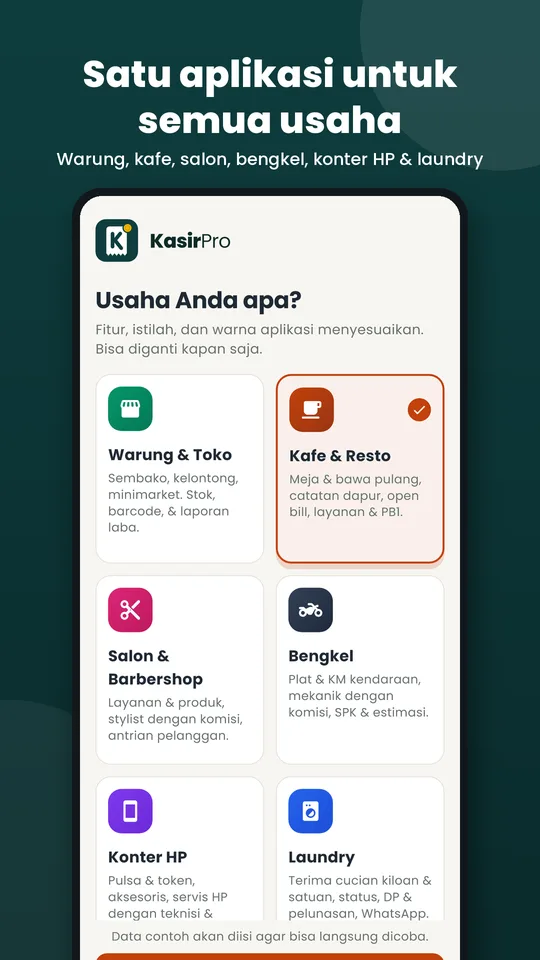
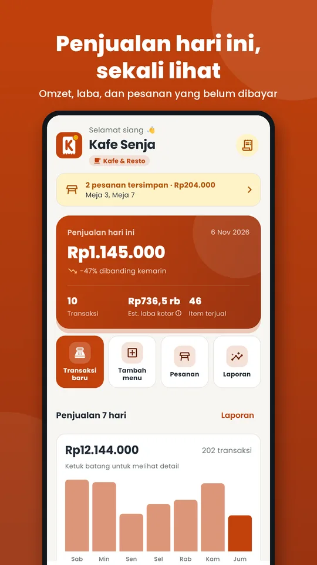
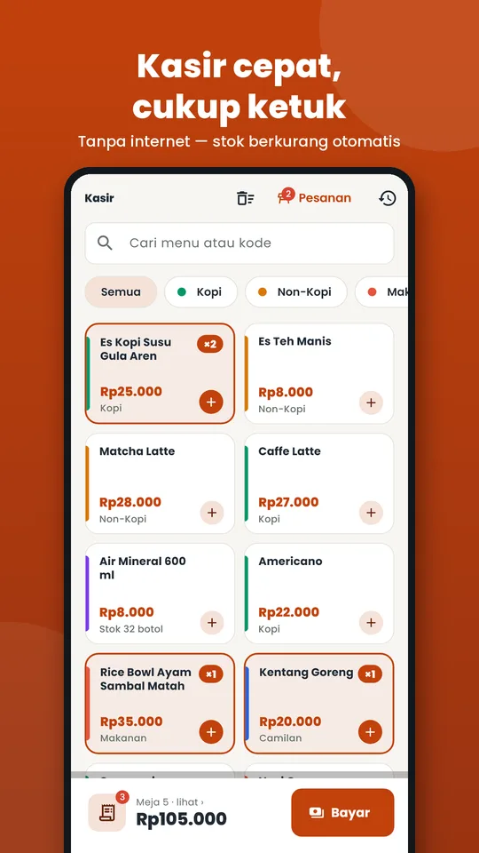
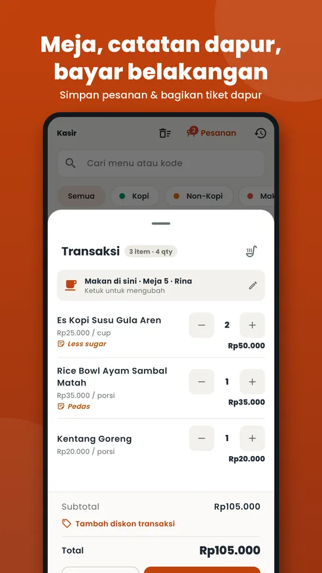
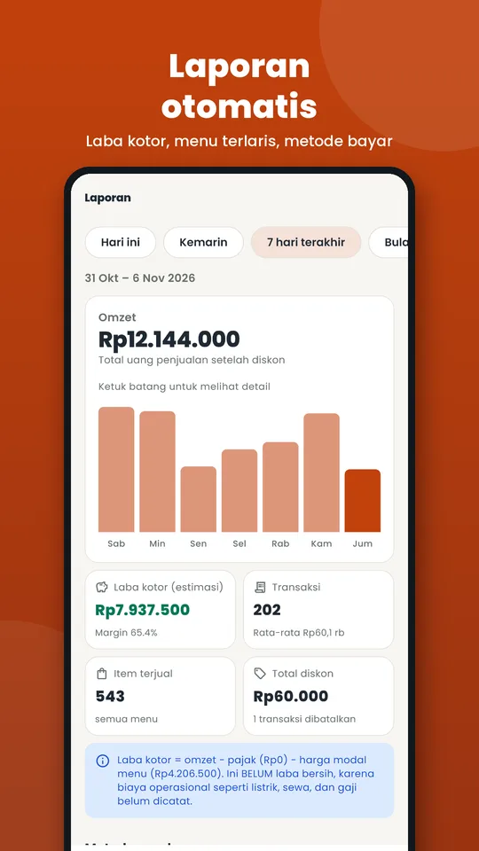
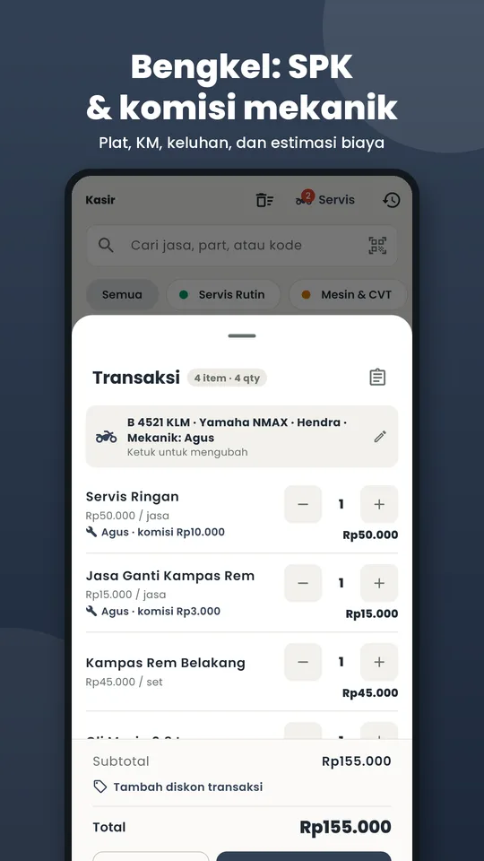
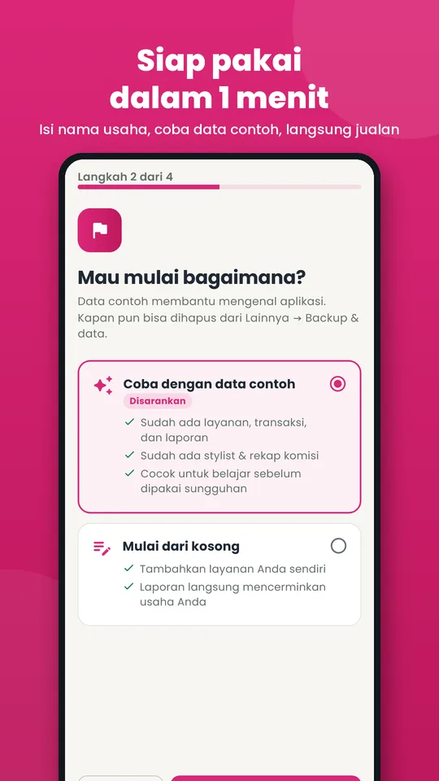
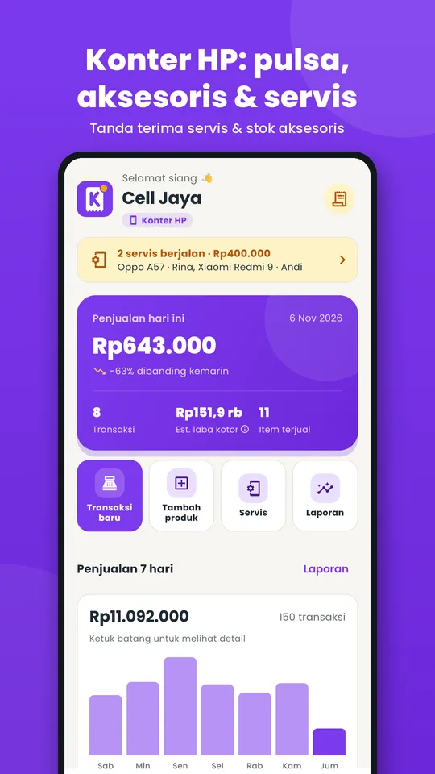

Warung & Toko
- Pindai barcode langsung dengan kamera HP
- Stok berkurang otomatis, ada peringatan stok menipis
- Harga modal & laba kotor tiap transaksi
Satu aplikasi untuk warung, kafe, salon, bengkel, konter HP, dan laundry. Pilih jenis usaha, isi nama toko, langsung berjualan — data tersimpan aman di HP Anda.
6 jenis usaha
Saat pertama dibuka, pilih jenis usaha. Istilah, warna, dan fiturnya langsung menyesuaikan — dan bisa diganti kapan saja tanpa mencampur data.
Untuk semua usaha
Dibuat untuk dipakai sambil melayani pembeli: tombol besar, sedikit langkah, dan tidak bergantung sinyal.
Jualan tetap jalan tanpa sinyal. Tidak perlu daftar akun.
Cetak langsung ke printer thermal Bluetooth 58/80 mm, atau kirim ke WhatsApp pelanggan.
Omzet, laba kotor, produk terlaris, dan metode bayar.
Stok berkurang otomatis, lengkap dengan riwayat dan opname.
Tunai, transfer, QRIS; diskon per item atau per transaksi.
Masuk dengan Google: data yang berubah dicadangkan ke Google Drive Anda sendiri.
Panduan awal singkat, bisa mulai dengan data contoh.
Nyaman dipakai dari pagi sampai malam.
Tampilan aplikasi
Geser untuk melihat kasir, pesanan meja, laporan, sampai servis bengkel.








Cara mulai
Tidak perlu daftar, tidak perlu laptop.
Gratis, ukurannya kecil, jalan di Android 7.0 ke atas.
Atur pajak dan karyawan bila perlu — atau coba dulu dengan data contoh.
Ketuk item di Kasir, terima pembayaran, kirim struk ke pelanggan.
Produk, transaksi, dan pelanggan disimpan hanya di HP Anda. KasirPro tidak punya server dan tidak bisa melihat data Anda.
Tanya jawab
Belum menemukan jawabannya? Kirim email ke sandy.pradana8886@gmail.com.
Ya. Semua fitur gratis tanpa batas transaksi. KasirPro didukung iklan kecil di Beranda, Laporan, dan Riwayat — tidak pernah di layar kasir atau pembayaran.
Tidak. Semua fitur kasir, stok, struk, dan laporan bekerja tanpa internet. Internet hanya dipakai untuk menampilkan iklan.
Di HP Anda sendiri. Aktifkan backup otomatis Google Drive di Lainnya → Backup & data: data yang berubah dicadangkan saat aplikasi ditutup dan setiap 15 menit, ke folder tersembunyi di Drive Anda sendiri.
Bisa. Pasangkan printer thermal Bluetooth 58/80 mm, pilih di Lainnya → Printer struk, lalu cetak dengan satu ketukan atau otomatis setelah bayar. Struk juga bisa dikirim ke WhatsApp pelanggan yang nomornya tersimpan.
Pasang KasirPro di HP baru, ketuk Pulihkan dari Google Drive di layar pertama, lalu masuk dengan akun Google yang sama. Bisa juga lewat file backup di Lainnya → Backup & data.
Bisa. Ganti jenis usaha kapan saja dari menu Lainnya. Data tiap usaha tersimpan terpisah, jadi tidak tercampur.
Gratis, tanpa internet, siap dalam satu menit.